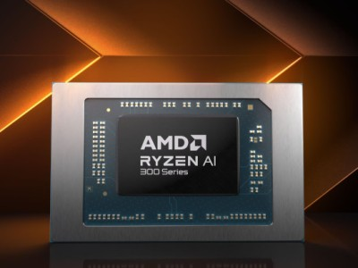
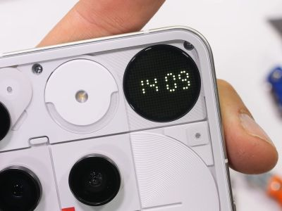
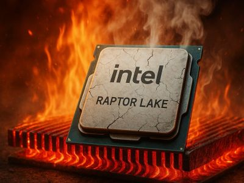

Subnautica 2 перенесли. По данным Джейсона Шрейера — чтобы не выплачивать сотрудникам гигантский бонус
На днях из студии Unknown Worlds уволили трёх ключевых авторов Subnautica. Теперь стали ясны причины: сиквел игры перенесли

17.07.25
Автономный графический планшет Wacom MovinkPad на Android оценили в $449
Компания Wacom представила Android-планшет MovinkPad для художников и дизайнеров.
10.07.25
просмотры: 10
AOC выпустила серию недорогих мониторов Essential E4 для дома и офиса
В каталоге бренда AOC появилась серия мониторов Essential E4, ориентированная на решение рабочих задач.
17.07.25
просмотры: 1
AMD Ryzen AI 5 330 для бюджетных ноутбуков получил мощный ИИ-модуль
Компания AMD представила процессор Ryzen AI 5 330, который позиционирует как решение для недорогих ноутбуков.
17.07.25
просмотры: 8
Nothing Phone (3) оказался прочнее, чем ожидалось
Техноблогер Зак Нельсон протестировал смартфон Nothing Phone (3) на прочность и разобрал его, чтобы оценить ремонтопригодность.
17.07.25
просмотры: 9
Для Cyberpunk 2077 вышел ещё один «последний патч» — с новыми машинами, автопилотом и очередными исправлениями
Не проходит года, чтобы Cyberpunk 2077 не получила очередной «самый последний» патч.
17.07.25
просмотры: 26
Процессоры Intel Raptor Lake оказались «метеозависимыми»
Инженер компании Mozilla Габриэле Свелто опубликовал любопытную статистику сбоев в работе процессоров семейства Intel Raptor Lake.
17.07.25
просмотры: 20
Google анонсировала презентацию серии Pixel 10 и других новинок
Компания анонсировала презентацию Made by Google, на которой покажет серию смартфонов Pixel 10.
17.07.25
просмотры: 18
Tesla выпустила электрокары Model YL и Model 3 Plus с увеличенным запасом хода
Tesla представила новые версии своих самых продаваемых электрокаров.
17.07.25
просмотры: 16
просмотры: 0